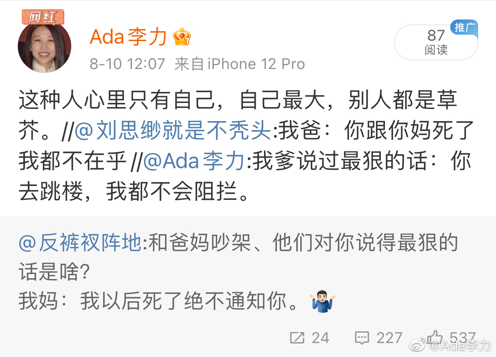

#不明所以#
我以为我爹说过最狠的话，一直是我心里的刺，轻易我并不想去回想。但现在说出来，似乎也没太大的感觉。
虽然我做了判断：能说出这种话的人，极度自私又自大。但心理学知识也告诉我，这种人也是可怜可悲的人。
人都是希望被喜欢被爱的吧，但是当这个人，不认为自己会被别人接纳或者爱戴，那么被嫌弃被厌恶的恐惧，会大过一切。会做出这样的行为：宁愿让自己显得像个冷血恶棍，也不想让自己成为个乞求爱的可怜虫。
于是到处都是让人厌恶的冷血恶棍。
我以为我爹说过最狠的话，一直是我心里的刺，轻易我并不想去回想。但现在说出来，似乎也没太大的感觉。
虽然我做了判断：能说出这种话的人，极度自私又自大。但心理学知识也告诉我，这种人也是可怜可悲的人。
人都是希望被喜欢被爱的吧，但是当这个人，不认为自己会被别人接纳或者爱戴，那么被嫌弃被厌恶的恐惧，会大过一切。会做出这样的行为：宁愿让自己显得像个冷血恶棍，也不想让自己成为个乞求爱的可怜虫。
于是到处都是让人厌恶的冷血恶棍。
- 